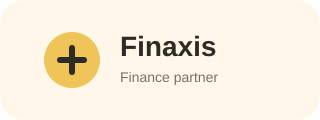
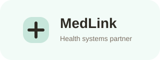
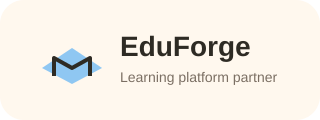
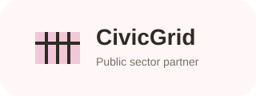

Software design and development
I design and deliver production-grade applications with an emphasis on usability, maintainability, and business impact.
Software designer, architect, and engineering lead
I help organizations turn complex ideas into well-structured platforms through software design and development, systems analysis, architecture planning, and technical team leadership.






Core skills
I work across product strategy, engineering execution, and long-term platform thinking to help businesses ship reliable systems.
I design and deliver production-grade applications with an emphasis on usability, maintainability, and business impact.

I translate requirements into clear workflows, technical specifications, and systems that align with real operational needs.

I architect platforms for scale, resilience, and clarity, balancing business priorities with strong engineering foundations.

I lead teams through delivery, mentorship, prioritization, and cross-functional collaboration that keeps momentum high.

I connect architecture, development, and execution so teams can move from concept to launch with fewer bottlenecks.

I focus on outcomes, shaping technical decisions around user needs, business goals, and sustainable growth.
How I work
I partner with teams to clarify requirements, design architecture, guide implementation, and deliver products that are ready for real users and long-term growth.
Why teams stay
“Mmah consistently combines strong technical judgment with calm leadership. He has a rare ability to simplify complex problems, align teams around practical solutions, and deliver with both speed and quality. Any team building serious digital products would benefit from his design thinking and engineering discipline.”
Preferred engineering stacks
Modern full-stack and backend delivery
I choose stacks based on product needs, speed of delivery, maintainability, and the ability to scale cleanly as systems evolve.

Professional certifications
These certifications represent my ongoing commitment to professional development across software engineering, systems thinking, and modern delivery practices.

Professional certification
Certification in designing scalable, resilient systems with clear architecture principles, technical documentation, and integration planning.
Professional certification
Covers deployment strategy, cloud-native workflows, infrastructure awareness, and scalable application operations.
Professional certification
Focused on iterative delivery, team collaboration, backlog planning, and building systems through sustainable engineering practices.

Professional certification
Validates leadership in mentoring developers, technical decision-making, team coordination, and engineering execution.

Professional certification
Covers automation, release processes, environment consistency, and the practices that improve reliability across teams.
Professional certification
Highlights structured thinking around user needs, solution framing, roadmap alignment, and measurable product outcomes.
Selected projects
A selection of projects spanning product development, backend architecture, business systems, and cross-functional technical execution.
Back to top Enterprise operations suite
Enterprise operations suite
Designed and delivered a full internal operations platform covering workflows, approvals, reporting, and role-based access.
 Health service portal
Health service portal
Built a secure service platform for intake, records management, and team coordination with a scalable backend foundation.
 Civic workflow dashboard
Civic workflow dashboard
Architected a modern dashboard for tracking submissions, approvals, analytics, and operational visibility across stakeholders.
 Learning management platform
Learning management platform
Led the design of a learning platform with content delivery, learner management, and progress insights for administrators.
 Logistics orchestration system
Logistics orchestration system
Designed the architecture for shipment coordination, status tracking, and data visibility across distributed teams.
 Startup SaaS MVP
Startup SaaS MVP
Helped shape and ship an MVP from concept to production with strong technical direction, rapid execution, and future-ready decisions.
 Platform modernization advisory
Platform modernization advisory
Supported modernization efforts with architecture recommendations, system restructuring, and practical implementation guidance.